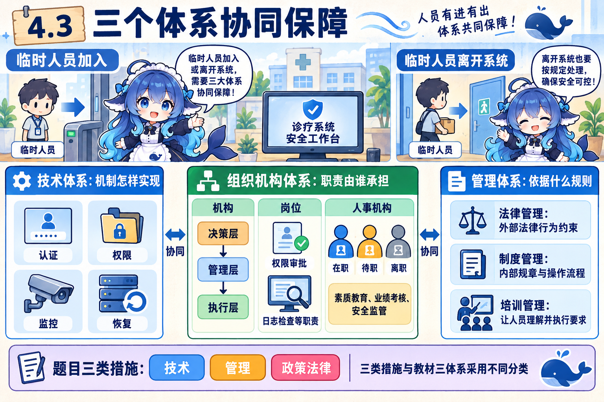
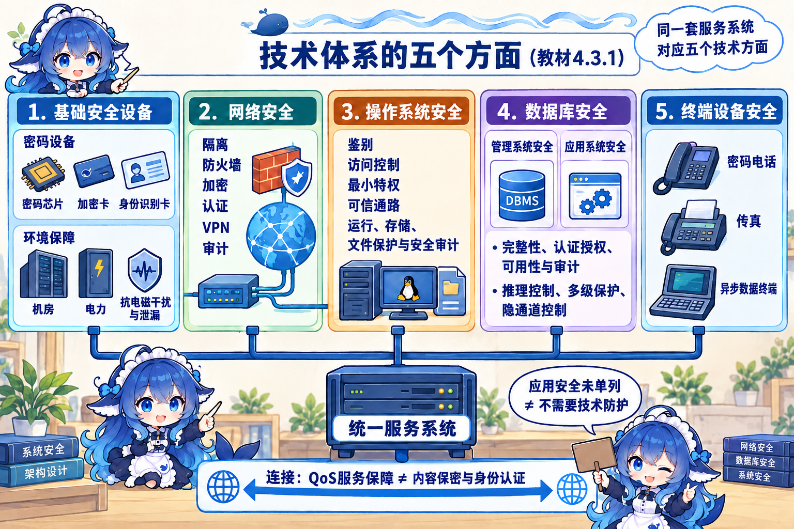
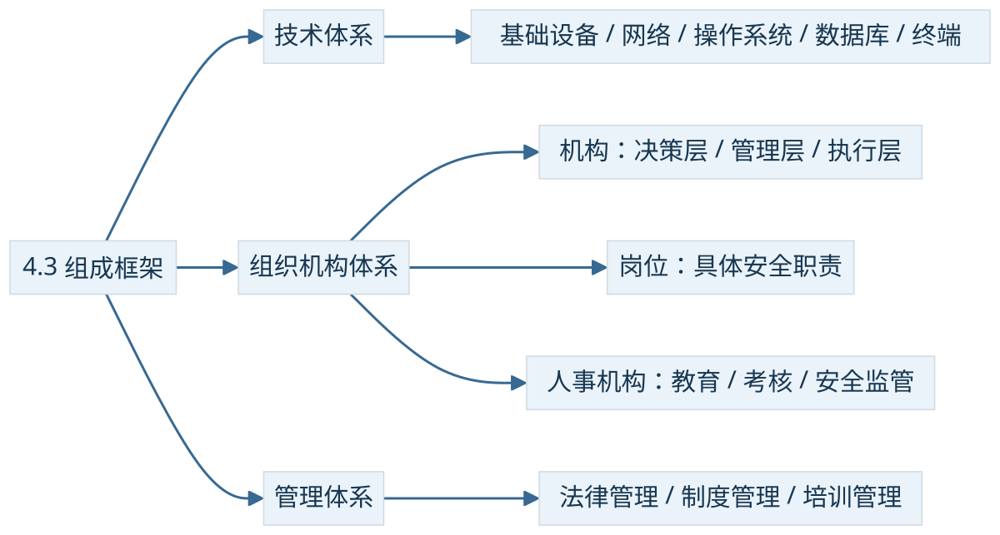

诊疗系统增加一位临时工作人员。他加入时要有合适账号，离开时权限要按流程处理。系统能否改权限、谁负责审批、人员是否知道这套规程，是三个相互配合的问题。
整体框架先分三个体系
按教材4.3，安全系统由技术体系、组织机构体系、管理体系共同构建。技术落实鉴别、访问限制、监控和恢复等机制；组织安排机构、岗位与人员责任；管理用法律、制度和培训规范行为。一个活动可能同时涉及三个体系，例如撤回离职账号权限，既要有技术能力，也要有人负责，还要按规定执行。
历年题还有“三类安全措施”的另一种提问。2022年下半年上午Q20/Q21明确列技术措施、管理措施和政策法律，技术措施的第二空是数据备份与灾难恢复。这是题干采用的措施分类。问教材整体框架时仍答技术、组织机构、管理；问管理体系内部组成则答法律、制度、培训。先识别正在回答哪一种分类，避免把相似词直接替换。


4.3.1 技术体系：安全能力落在哪里
教材列五个主要方面。它们为不同对象提供技术保障，不能把这五个方面排成一次建设必经的五个步骤。
| 技术方面 | 教材范围与机制 | 同一诊疗系统中的位置 |
|---|---|---|
| 基础安全设备 | 密码芯片、加密卡、身份识别卡；物理环境、机械防护、电力保障、抗电磁干扰与电磁泄漏措施 | 机房与受保护密码设备 |
| 计算机网络安全 | 隔离、防火墙与访问控制、加密传输、认证、签名、摘要、隧道/VPN、病毒防范、上网行为管理与审计 | 终端到服务、站点间的传输 |
| 操作系统安全 | 标识鉴别、访问控制、最小特权、可信通路、运行保障、存储保护、文件保护、安全审计 | 服务运行的主机环境 |
| 数据库安全 | 管理系统与应用系统两部分；物理/逻辑完整性、元素安全、可审计性、认证、授权、可用性、推理控制、多级保护、隐通道控制 | 数据引擎与调用它的业务应用 |
| 终端设备安全 | 教材从电信终端列密码电话、传真密码机、异步数据密码机等 | 接入和处理信息的终端 |


基础设备还包含机房、电力与电磁环境保障，不能因为题目中“设备管理”属于管理对象，就把“基础安全设备”排除出技术体系。操作系统的可信通路要求身份或安全操作经过受信任的交互路径；最小特权则限制进程和用户仅拥有完成任务所需的权限。教材对无错误配置、无漏洞等措辞表达安全需求，本册不把它写成现实系统已被证明永远无漏洞。
数据库的两部分是数据库管理系统安全与数据库应用系统安全。前者如数据库内的账户权限和审计，后者如业务应用的参数化查询、业务授权；这些例子展示分工，相关控制也可能跨越两边。物理/逻辑完整性是要保障的属性层面，不能拿来替换两种系统分类。推理控制关注多次看似合法的查询是否组合泄露受限信息，多级保护按安全级别约束访问，隐通道控制关注借正常授权通道之外的间接途径泄漏信息。
“应用程序安全”没有作为独立名称列入这五项，只能说明它不在该题采用的五项名单中。数据库应用安全已在教材范围内；业务应用仍然需要相应技术防护。今日PC与移动端防护可作为终端安全连接，教材列的是电信终端例子，不能把这几个例子当成所有现代终端的穷尽清单。
4.3.2 机构、岗位、人事机构各做什么
组织机构体系是组织保障，由机构、岗位、人事机构三个模块组成。机构设置再分决策层、管理层、执行层：决策层确定总体安全方向与责任，管理层协调落实，执行层承担具体实施。后两句是对层次职责的教学解释；三个层次位于机构模块内，与三大体系处在不同分类层级。
岗位是针对某一个或几个安全事务设定的职位，例如由谁审批账号权限、由谁检查日志。岗位职责应能落实到人。人事机构则根据岗位，对在职、待职和离职人员进行素质教育、业绩考核、安全监管。教材并未只规定离职人员才受监管。临时工作人员离开后，如果通知与处理责任没有落到岗位，即使系统已有完善权限机制，处理仍可能遗漏。
4.3.3 规则怎样成为实际行为
法律管理依据相关国家法律法规，规范信息系统主体及其与外界关联的行为；制度管理依据安全需求建立组织内部规章制度；培训管理让人员理解并能执行要求。离职权限处理规程属于制度，讲解和演练属于培训，承担教育考核与监管的人事模块则属于组织安排。同一活动具有不同观察角度，术语不能因内容相近而混为一类。
技术、人员、设备等是管理可能涉及的对象；风险、应急、审计等是管理活动领域。教材问“管理体系三个组成部分”时，不能用这两组名称替代法律、制度、培训。教材的管理重要性表达也不应被读成精确的技术/管理工作量百分比。


连接：题目里的另一个层次模型
归档的章练第3题给出战略安全层、权限控制层、应用接口层、基础安全层四个选项，并把数据分级分类归于基础安全层。这里保留该题特定模型的回答：先标定数据的重要性与敏感度，再据此制定访问策略。这个四层模型不能替换教程的三体系，也不能推出所有工程体系都必须把分级分类安排在相同名称的一层。
另一条已正确作答的QoS题问IntServ服务类型。按其题目口径辨认保证质量、负载受控、尽力而为，“突发式服务”是干扰项。公共规范中，保证服务对符合已约定流量条件的业务提供带宽和最大排队时延等保证；负载受控追求接近欠载网络的体验；尽力而为没有这类服务保证。QoS会影响性能和可用性，却不自动提供加密、来源认证或内容完整性。这里作为网络技术连接，不扩大成安全体系主干。RFC2212、RFC2211支持这个条件区别。
回到临时人员变动：技术给系统能力，组织给岗位和人事责任，管理给依据、规程和培训。只要将同一件事按这三个问题拆开，就能把相近名词放回正确层次。